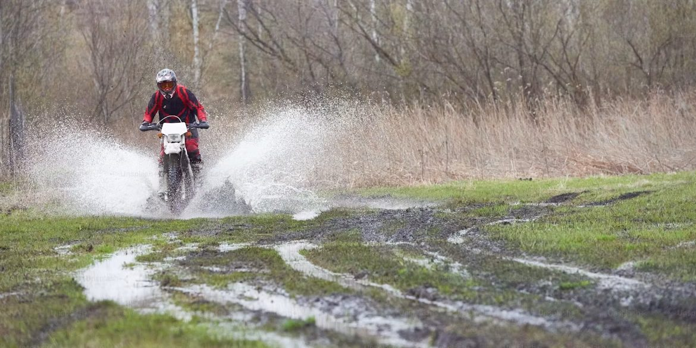

Roadside
The first ninety seconds after you stop In preparation
Position, visibility, then the machine. In that order, every time.

03 Frontier Index
Breakdowns, first aid, weather and the preparation that happens before any of it.
The gap between an inconvenience and an emergency is usually preparation. This section is about the hour after something goes wrong, and the ten minutes before you left that decided how that hour goes.
Covered in this section
Position and visibility come before the machine. Every time, including when the fault seems trivial.
Push the bike fully clear of the lane if it will not run. A partly clear bike is a hazard, not a stopped vehicle.
High visibility on, hazards on if fitted, and a warning marker back up the road further than feels necessary.
Not between the bike and traffic. Uphill and behind a barrier if there is one.
Adrenaline hides injury. Do this deliberately before you look at the motorcycle.
Note where you are precisely enough to tell someone. Nearest marker, town, junction, direction of travel.
Only now. The machine has waited this long and will wait another minute.
Roadside
Position, visibility, then the machine. In that order, every time.
First aid
What is worth the space, what is not, and what you need to know how to use before you need it.
Weather
Twenty minutes of shelter against two hours of reduced grip and zero visibility.
Entries marked in preparation are planned and drafted but not published. They are listed so the scope of the section is honest rather than to imply a page exists.